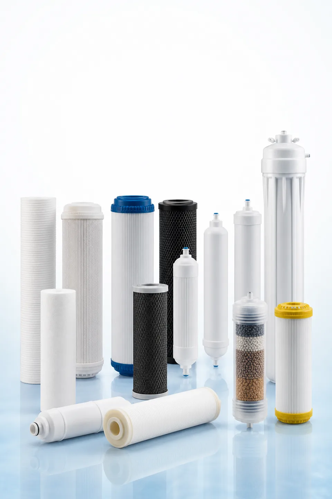

Hướng dẫn tìm nguồn cung ứng lõi lọc
Danh mục lõi lọc nước
So sánh các dòng lõi lọc, tiêu chí lựa chọn và tùy chọn nhãn hiệu riêng cho các chương trình cung ứng máy lọc nước, máy cấp nước và lõi lọc thay thế.
Nhận danh mục lõi lọc✓ Danh mục OEM bằng tiếng Anh gồm 50 trang✓ Tùy chọn nhãn hiệu riêng và OEM✓ Hướng dẫn lựa chọn và thông số kỹ thuật✓ Không công khai giá

PP · GAC · CTO · T33 · RO · UF
Các dòng sản phẩm có trong danh mục
Danh mục được tổ chức xoay quanh việc lựa chọn theo tiêu chí kỹ thuật, các dạng lõi lọc tương thích và thông tin cần cung cấp để báo giá, không đưa ra tuyên bố về sức khỏe hoặc chứng nhận thiếu cơ sở chứng minh.
Lõi lọc cặn PP
GAC / UDF
Khối than CTO
Lõi T33 nối tiếp
Màng RO
Màng UF
Nhựa trao đổi ion / vật liệu lọc chuyên dụng
Yuchen Water
Cho chúng tôi biết địa chỉ nhận danh mục của quý khách
Hoàn thành biểu mẫu thông tin liên hệ doanh nghiệp để tải ngay bản PDF OEM bằng tiếng Anh gồm 50 trang được cung cấp riêng.
Danh mục OEM bằng tiếng Anh gồm 50 trang
Tùy chọn nhãn hiệu riêng và OEM
Hướng dẫn lựa chọn và thông số kỹ thuật